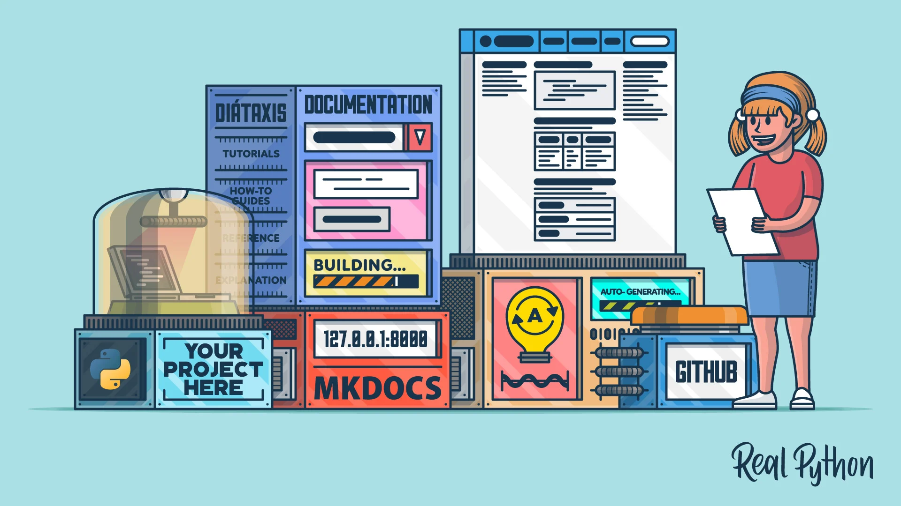
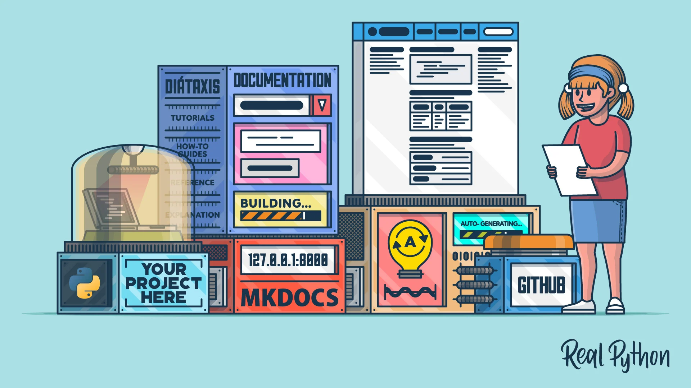
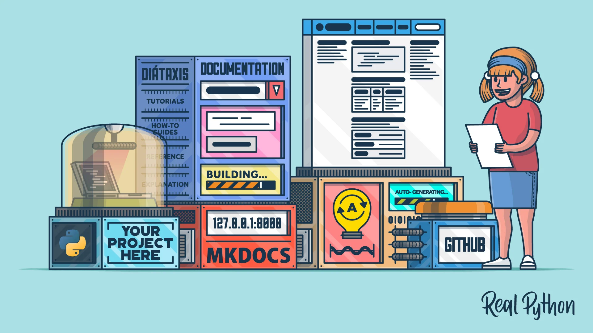

STEM career paths put a heavy emphasis on project creation.
Project help showcase the person's creativity, the extend of their knowledge, their desire to learn, and much much more.
The link before will link you to Github, the place where the world stores their codes.
